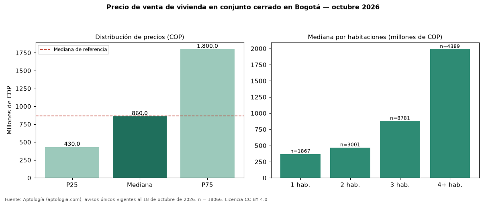

Precio de venta de vivienda en conjunto cerrado en Bogotá — octubre 2026
COP 860 millones es la mediana de venta de vivienda en conjunto cerrado en Bogotá, según 18066 avisos únicos. Es prácticamente la misma mediana de toda la oferta de venta en Bogotá (COP 866 millones). Frente a los avisos fuera de conjunto cerrado del mismo grupo (COP 895 millones, n = 32063), la diferencia es de −4 %; por metro cuadrado, +9 %. El rango intercuartílico va de COP 430 millones a COP 1,80 mil millones (razón 4,2). Por metro cuadrado, la mediana es COP 6.969.697/m² (+6 % frente a COP 6.557.377/m²), puesto 1 de 5 ciudades comparables. Cruzando con la oferta de arriendo equivalente, la rentabilidad bruta implícita es 8,8 % anual. Por habitaciones: 1 habitación, COP 370 millones (n = 1867); 2 habitaciones, COP 470 millones (n = 3001); 3 habitaciones, COP 880 millones (n = 8781); 4 o más habitaciones, COP 1,99 mil millones (n = 4389). Datos abiertos CC BY 4.0 de Aptología; fuente y búsqueda de inmuebles: https://www.aptologia.com/venta/bogota. Archivos: PDF de 2 páginas, CSV con las cifras y gráfica PNG.

| Avisos únicos | 18066 |
|---|---|
| Percentil 25 | COP 430.000.000 |
| Mediana | COP 860.000.000 |
| Percentil 75 | COP 1.800.000.000 |
| Mediana por m² | COP 6.969.696 |
Fuente: avisos vigentes de portales inmobiliarios recopilados por Aptología, deduplicados (mínimo 30 avisos únicos por celda). Precios pedidos, no cerrados. Fecha: 2026-10-18.